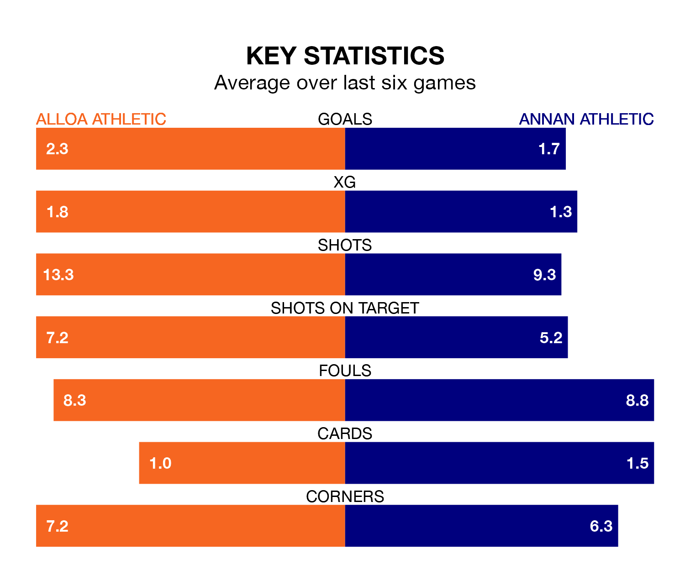

Struggling Annan Athletic face Alloa Athletic away at the Indodrill Stadium on Saturday looking to build on a win in their last league outing.
After securing all three points with a 3-2 victory over Kelty Hearts on March 23, the Galabankies sit ninth in League One.
They travel to play an Alloa side third in the standings, who lost in their last match, 2-0 against Queen of the South.
With 43 goals in 30 games so far this season, Annan are scoring at below the league average rate with 1.4 goals per game. And they are conceding more than average, letting in 57 goals at a rate of 1.9 per game.
Alloa, meanwhile, are average scorers, with 1.6 goals per game. They have also conceded 1.6 goals per game.
In Thomas Goss, Annan Athletic have one of the league's most on-form strikers so far this season. He has notched nine goals in 26 appearances, to sit fifth in the scoring charts.
Alloa Athletic's top scorers, with eight goals each, are Bobby Wales and Taylor Steven.
In the last three years, Alloa and Annan have played each other on three occasions. Alloa won two of them and they drew once.
Their last meeting was on February 13, when Alloa won 2-1 at home.
The hosts are in mixed form in League One, with three wins and three losses from their last six games.
With three wins and two draws over that period, the Galabankies' form is slightly better – they have taken 11 points from 18, compared to Alloa's nine.
Updated: 12:39 (UTC), 26/03/24